Analytical Trail 1
Started at www.worldvaluessurvey.org, searched for countries appearing over all time-periods (wave). I particularly liked the sub-group about children qualities. People are surveyed in multiple countries to determine which qualities are most desired/seen in children during that time-period.
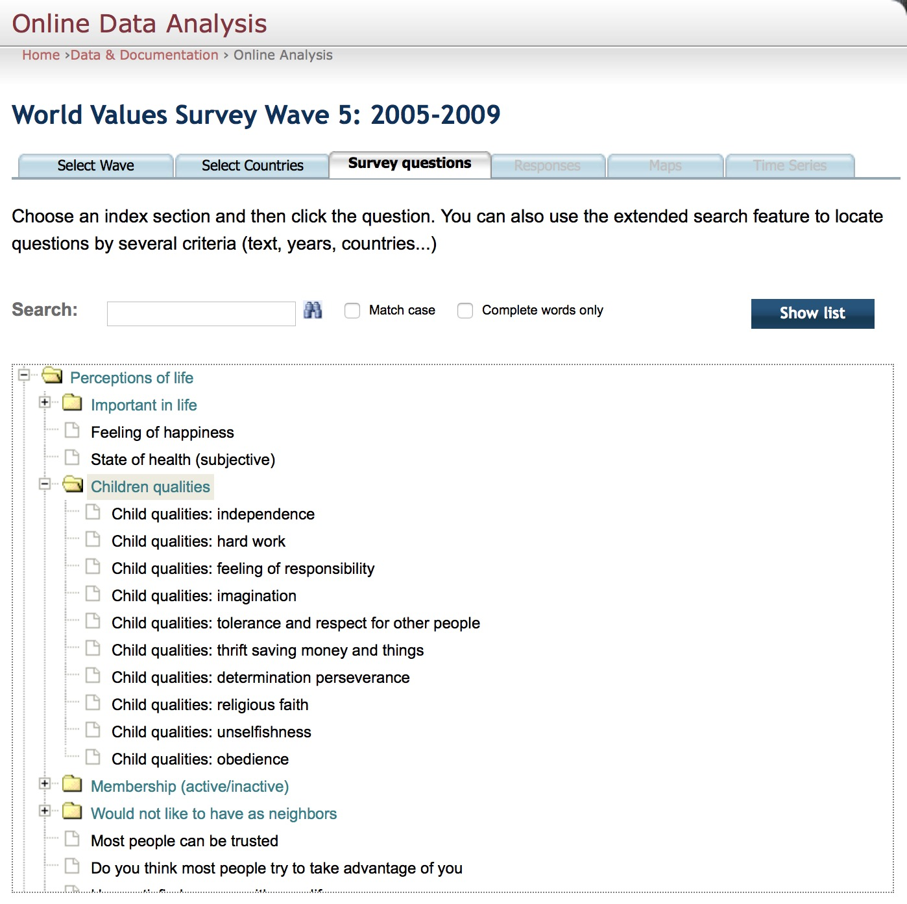 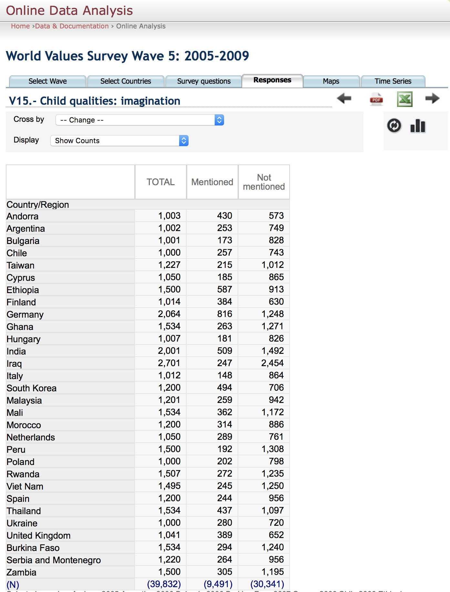 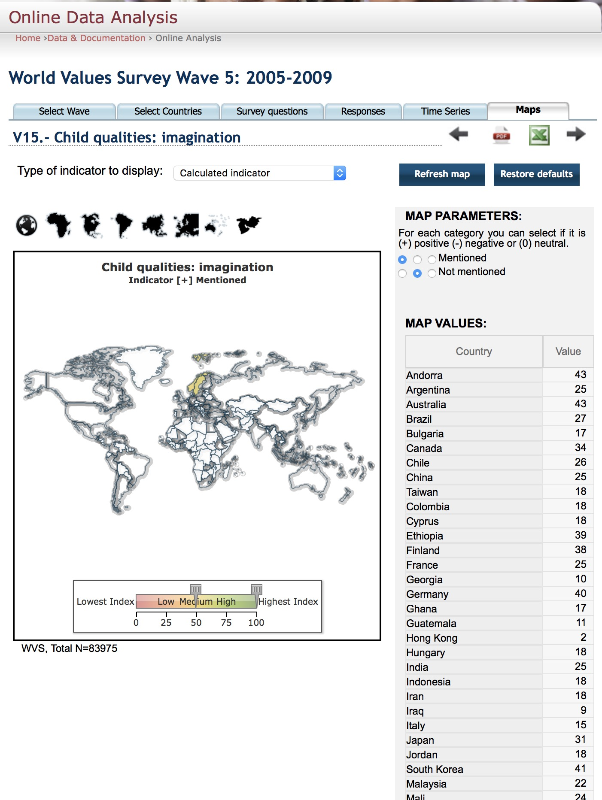
Once all the data was aggregated in tables. Column headers corresponds to Variables like Country Code (cc), Country Name, Independence, Thrift saving money and things, Unselfishness, Religious, Imagination, Tolerance and respect for other people, Determination, Hard Work and Obedience. The Row headers corresponds to 30 selected countries not arranged in order.
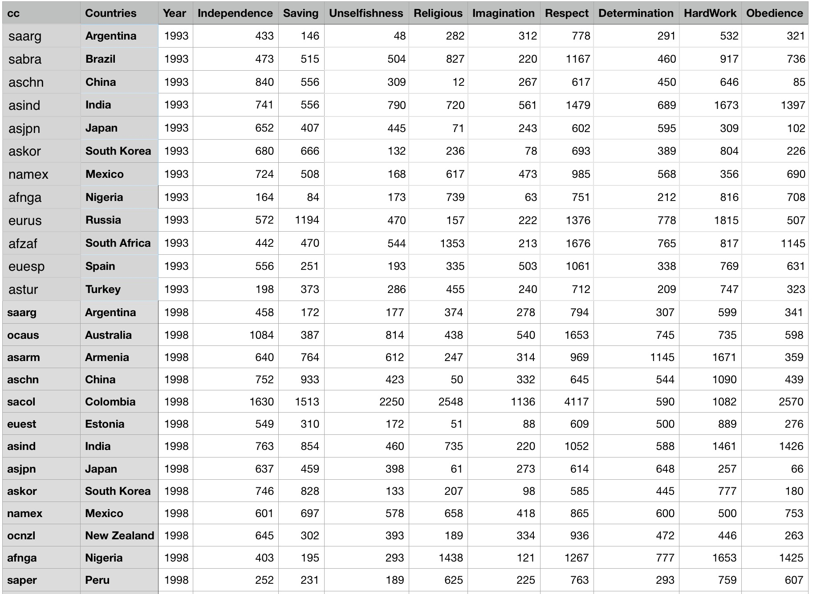
Started at www.worldvaluessurvey.org, searched for countries appearing over all time-periods (wave). I particularly liked the sub-group about children qualities. People are surveyed in multiple countries to determine which qualities are most desired/seen in children during that time-period.
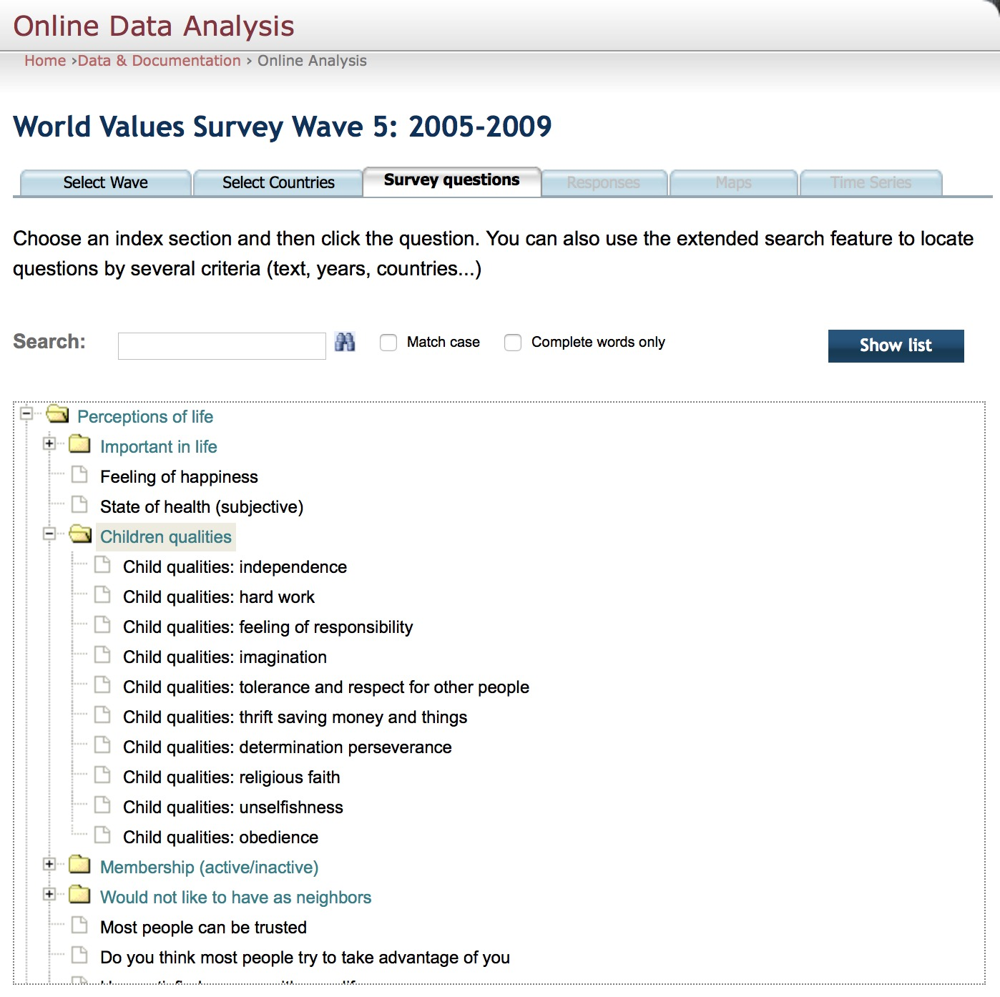 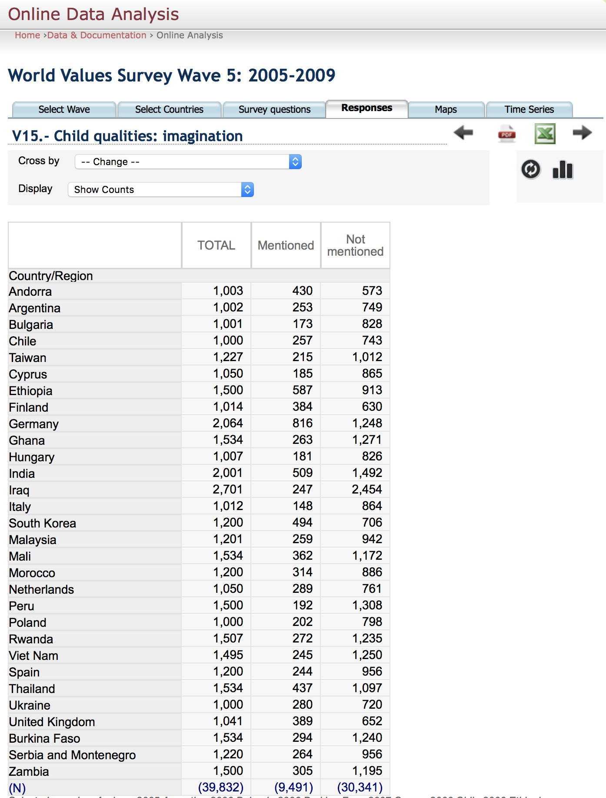 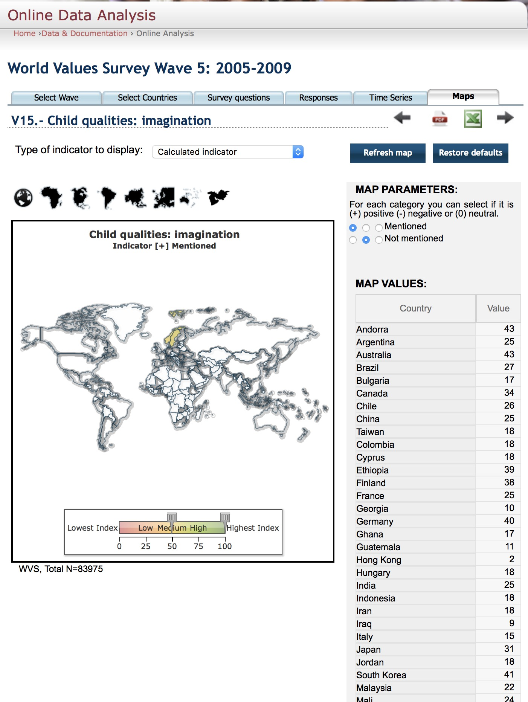
Once all the data was aggregated in tables. Column headers corresponds to Variables like Country Code (cc), Country Name, Independence, Thrift saving money and things, Unselfishness, Religious, Imagination, Tolerance and respect for other people, Determination, Hard Work and Obedience. The Row headers corresponds to 30 selected countries not arranged in order.
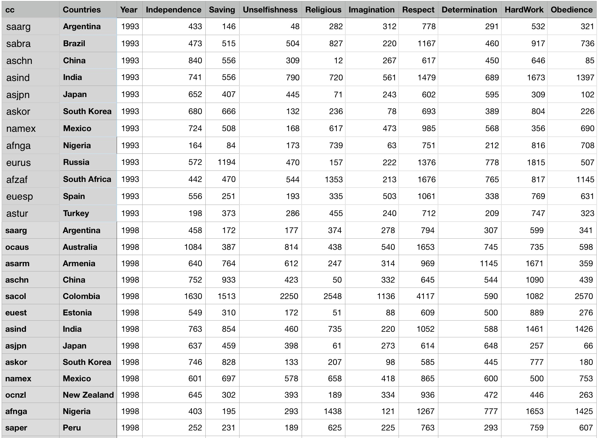
The data was exported from excel in CSV format and then converted to JSON using online tools. The JSON data is used to generate geomaps in d3.
In addition to d3js, d3Plus.js (d3plus.org) is used to simplify map rendering. Five maps are created ranging from 1989 to 2014, each with 5 year wave. Selected countries are plotted and variable data is shown in tooltips.
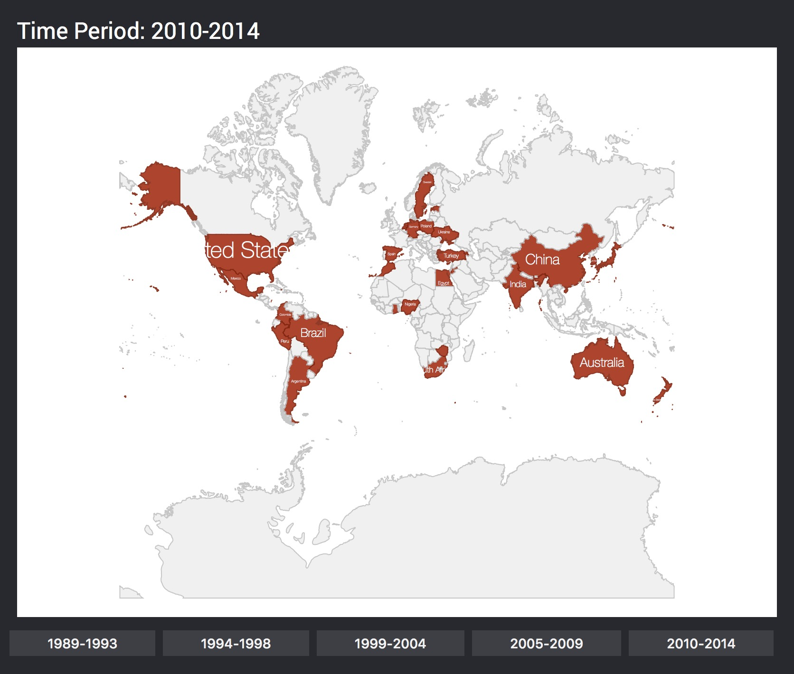 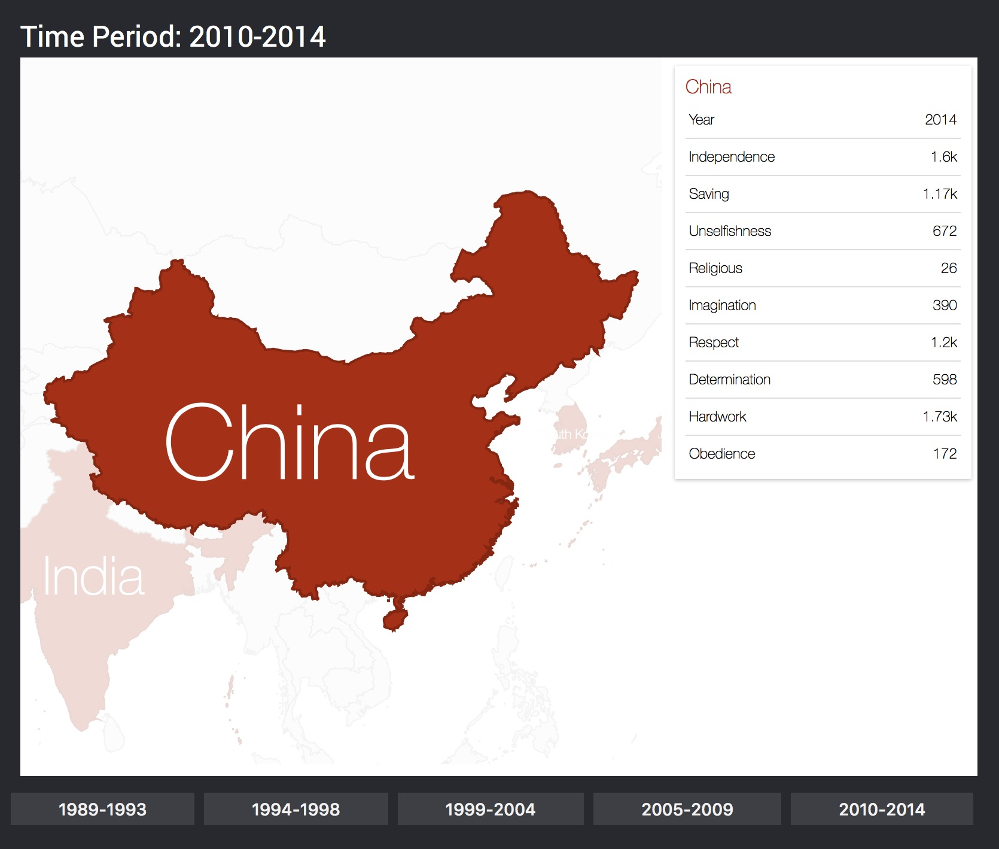
Buttons at bottom allows user to switch between different time-waves and see the data geographically. One can also compare values between two countries in same time-wave by clicking on one country and hovering over the other.
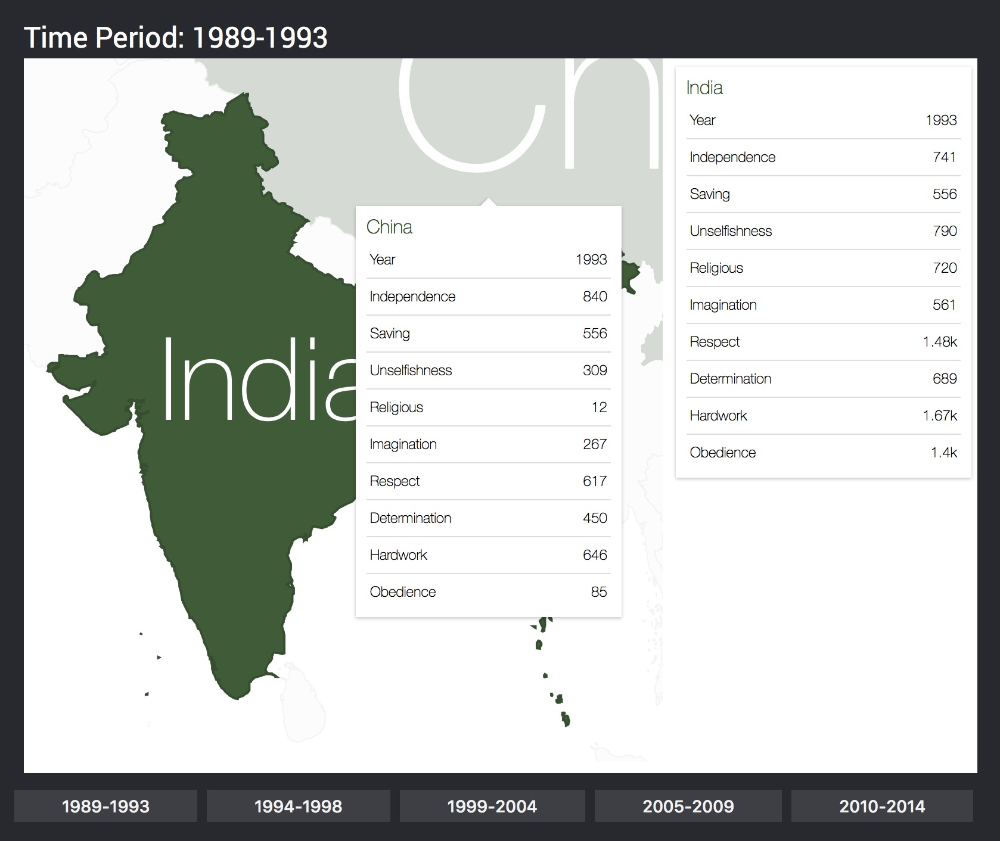